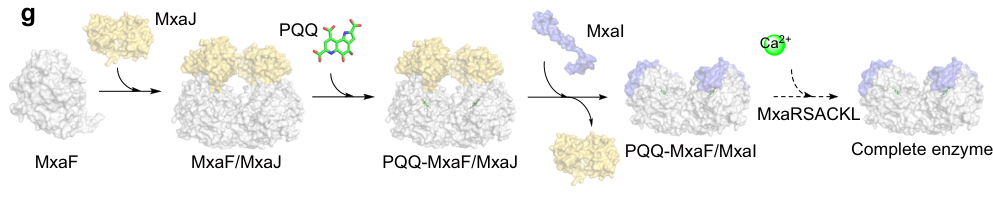

mxaK encodes a 208-amino-acid accessory protein of the mxa methanol-oxidation gene cluster in Methylorubrum extorquens AM1, required for maturation/activation of the calcium-dependent PQQ methanol dehydrogenase (MxaFI-type MDH). MxaK is one of several auxiliary mxa-cluster proteins (with MxaA, MxaC, MxaL, MxaR, MxaS) implicated in the incorporation of Ca2+ into the catalytic center of the large MDH subunit MxaF. Deletion of mxaK yields an MDH that still contains the MxaF/MxaI structural subunits but is catalytically inactive, and activity can be restored in vitro by incubation with 10 mM CaCl2 at pH 9.5 - directly implicating MxaK in the Ca2+ incorporation step of MDH maturation rather than in assembly of the structural subunits. The protein carries a single predicted transmembrane helix (residues 32-52), but its subcellular localization has not been experimentally demonstrated and the precise molecular mechanism (direct Ca2+ coordination, scaffold, or chaperone) remains unresolved. No enzymatic reaction is attributed to MxaK itself; the strongest evidence supports a non-catalytic maturation/accessory role enabling production of active periplasmic Ca-dependent methanol dehydrogenase, used primarily when lanthanides are absent.
| GO Term | Evidence | Action | Reason |
|---|---|---|---|
|
GO:0046170
methanol catabolic process
|
IMP | NEW |
Summary: MxaK is required for methanol oxidation because it is needed to produce catalytically active calcium-dependent methanol dehydrogenase (MxaFI). Deletion mutant studies show that without mxaK, MDH retains its structural subunits but is enzymatically inactive, blocking the first step of methanol catabolism. This biological-process annotation is appropriate and supported by both the historical mutant/complementation work (PMID:7592474) and recent deletion/reconstitution experiments summarized in the falcon deep research. Retained as a proposed (NEW) annotation since the gene currently has no GOA annotations.
Supporting Evidence:
PMID:7592474
three genes (mxaAKL) involved in incorporation of calcium into methanol dehydrogenase
file:METEA/mxaK/mxaK-deep-research-falcon.md
deletion of **mxaK** produced methanol dehydrogenase containing the MxaF/MxaI subunits but with **no detectable enzymatic activity**
file:METEA/mxaK/mxaK-deep-research-falcon.md
MxaFI is a **periplasmic** PQQ-dependent MDH that oxidizes methanol to formaldehyde
|
|
GO:0044183
protein folding chaperone
|
IMP | NEW |
Summary: Corrected MF term. The previously proposed term GO:0051087 (protein-folding chaperone binding) means "binding TO a chaperone protein", which did not match the described function of MxaK and was a Bug #947-type mislabel. The original chaperone hypothesis (Morris et al., PMID:7592474) and the recent maturation evidence describe MxaK as acting AS a maturation/chaperone-like accessory factor that stabilizes MDH to permit Ca2+ incorporation - so GO:0044183 (protein folding chaperone, a chaperone activity) is the appropriate term. Note, however, that the falcon deep research is explicit that MxaK's precise mechanism (direct Ca2+ coordination vs scaffold vs chaperone) is unresolved, so this MF assignment remains a hypothesis-level chaperone-activity annotation rather than a demonstrated catalytic function.
Supporting Evidence:
PMID:7592474
A combination of sequence analysis, mutant complementation data, and gene expression studies showed that these genes correspond to mxaSACKLDorf1
file:METEA/mxaK/mxaK-deep-research-falcon.md
MxaK is required for enzyme maturation rather than for assembly of the structural subunits
file:METEA/mxaK/mxaK-deep-research-falcon.md
No direct evidence in the retrieved texts specifies whether MxaK binds Ca2+ directly, acts as a scaffold, or regulates Ca2+ transport
|
|
GO:0016020
membrane
|
IEA | NEW |
Summary: MxaK contains a single predicted transmembrane helix (residues 32-52, Phobius prediction), consistent with possible membrane association; the UniProt record carries the GO:0016020 membrane term as an IEA keyword-based annotation. However, the falcon deep research is explicit that the subcellular localization of MxaK has not been experimentally demonstrated - it is unresolved whether MxaK is cytosolic, membrane-associated, or periplasmic. The mature MxaFI enzyme it helps assemble is periplasmic. This prediction-based localization is retained as a non-core, low-confidence assignment given the lack of experimental confirmation.
Supporting Evidence:
file:METEA/mxaK/mxaK-uniprot.txt
FT TRANSMEM 32..52
file:METEA/mxaK/mxaK-deep-research-falcon.md
do not directly state the subcellular localization of MxaK
|
Q: What is the precise molecular mechanism by which MxaK stabilizes MDH for calcium incorporation? Does it bind directly to the calcium binding site or induce allosteric changes?
Suggested experts: Christopher Anthony (expert on bacterial methanol dehydrogenases and PQQ enzymes), Victor L. Davidson (expert on quinoprotein structure and function)
Q: Do MxaK, MxaA, and MxaL function as a stable complex or do they act sequentially during MDH maturation? What is the stoichiometry of this system?
Suggested experts: Christopher Anthony, Mary E. Lidstrom (expert on methylotrophy and C1 metabolism)
Q: Why is high pH (9.5) required for in vitro calcium reconstitution of MDH in the absence of MxaK/A/L? What chemical or structural barrier does this overcome?
Suggested experts: Victor L. Davidson, Kazunobu Matsushita (expert on bacterial quinoprotein dehydrogenases)
Q: Is the calcium incorporation system (MxaK/A/L) conserved across all methylotrophs with Ca-dependent MDH, or are there alternative mechanisms in other species?
Suggested experts: Mary E. Lidstrom, Ludmila Chistoserdova (expert on methylotrophic bacteria evolution)
Q: Does MxaK play any role beyond initial calcium incorporation, such as maintaining calcium in the active site or protecting MDH from calcium loss during catalysis?
Suggested experts: Christopher Anthony, Osao Adachi (expert on methanol dehydrogenase biochemistry)
Experiment: Determine the crystal structure of MxaK in complex with methanol dehydrogenase (MxaFI) to reveal the molecular mechanism of how MxaK stabilizes MDH configuration for calcium incorporation.
Hypothesis: MxaK interacts directly with specific regions of MDH, inducing conformational changes that create or stabilize the calcium binding site, with the transmembrane domain potentially facilitating membrane association during assembly.
Type: structural biology
Experiment: Perform in vitro reconstitution experiments with purified MxaK, MxaA, MxaL, and apoMDH to determine the order of assembly and calcium insertion, measuring binding affinities and kinetics of each step.
Hypothesis: MxaK, MxaA, and MxaL function sequentially or cooperatively to create a competent calcium binding site in MDH, with MxaK acting as the primary chaperone that initiates the assembly process.
Type: biochemical assay
Experiment: Use site-directed mutagenesis to identify critical residues in MxaK required for MDH interaction and calcium incorporation activity, testing mutants for complementation of mxaK deletion phenotype.
Hypothesis: Specific residues in the periplasmic domain of MxaK mediate direct contact with MDH and are essential for chaperone function, while the transmembrane domain positions the protein appropriately at the membrane.
Type: genetic manipulation
Experiment: Investigate whether MxaK has calcium binding activity itself using ITC or fluorescence-based calcium binding assays, and test if calcium binding to MxaK is required for its chaperone function.
Hypothesis: MxaK may transiently bind calcium and deliver it to the MDH active site, or alternatively, MxaK may create a calcium-accessible conformation in MDH without directly binding the metal.
Type: biochemical assay
Experiment: Determine the experimental subcellular localization of MxaK (cytosolic, membrane-integrated, or periplasmic) using fractionation, fluorescent fusions, or signal-peptide/topology analysis, since current localization rests only on a Phobius transmembrane prediction.
Hypothesis: MxaK is membrane-associated via its predicted N-proximal transmembrane helix and acts at the membrane-periplasm interface where it can deliver Ca2+ to the periplasmic MxaFI MDH during maturation.
Type: cell biology
The research report should be a detailed narrative explaining the function, biological processes, and localization of the gene product. Citations should be given for all claims.
You should prioritize authoritative reviews and primary scientific literature when conducting research. You can supplement
this with annotations you find in gene/protein databases, but these can be outdated or inaccurate.
We are specifically interested in the primary function of the gene - for enzymes, what reaction is catalyzed, and what is the substrate specificity? For transporters, what is the substrate? For structural proteins or adapters, what is the broader structural role? For signaling molecules, what is the role in the pathway.
We are interested in where in or outside the cell the gene product carries out its function.
We are also interested in the signaling or biochemical pathways in which the gene functions. We are less interested in broad pleiotropic effects, except where these elucidate the precise role.
Include evidence where possible. We are interested in both experimental evidence as well as inference from structure, evolution, or bioinformatic analysis. Precise studies should be prioritized over high-throughput, where available.
The retrieved primary and review literature discussing mxaK is explicitly in the context of the mxa methanol dehydrogenase gene cluster from Methylobacterium/Methylorubrum extorquens AM1, and consistently describes mxaK as an accessory gene required for Ca2+ insertion into the MxaF active site during maturation of the Ca-dependent methanol dehydrogenase (MDH). (zhou2025decipheringtheassembly pages 2-3, chistoserdova2003methylotrophyinmethylobacterium pages 2-3)
Genomic and operon mapping work describes the canonical AM1 mxa locus as a ~12.5 kb, 14-gene cluster transcribed in one direction with the gene order reported as mxaFJGIRSACKLDEHB (which includes mxaK). This locus encodes:
* structural MDH subunits (mxaF, mxaI),
* the electron-acceptor cytochrome (mxaG, cytochrome cL), and
* multiple auxiliary proteins required for MDH activation/maturation, including proteins annotated as essential for Ca2+ insertion into the MDH apoprotein. (chistoserdova2003methylotrophyinmethylobacterium pages 4-5, roszczenkojasinska2020geneproductsand pages 4-5)
Across the most directly relevant AM1-specific evidence, mxaK is best defined as an MDH maturation/accessory factor required for Ca2+ incorporation into the catalytic center of MxaF, thereby enabling formation of active Ca-dependent MxaFI methanol dehydrogenase. (zhou2025decipheringtheassembly pages 2-3, zhou2025decipheringtheassembly pages 4-5)
In Methylorubrum extorquens AM1, deletion of mxaK produced methanol dehydrogenase containing the MxaF/MxaI subunits but with no detectable enzymatic activity, indicating that MxaK is required for enzyme maturation rather than for assembly of the structural subunits. In the same study, activity was restored by incubation with 10 mM CaCl2 at pH 9.5, directly supporting a role for MxaK in the Ca2+ incorporation step of MxaFI methanol dehydrogenase maturation. (zhou2025decipheringtheassembly pages 2-3, zhou2025decipheringtheassembly media 213b503b)
Zhou et al. further proposed an assembly model in which MxaK, together with MxaR, MxaS, MxaA, MxaC, and MxaL, acts after PQQ loading to help insert Ca2+ into the catalytic center of MxaF, yielding the mature active enzyme; these conclusions are specifically illustrated in Figures 2d/2e and 5g of the 2025 Nature Communications paper. (zhou2025decipheringtheassembly pages 4-5, zhou2025decipheringtheassembly media 213b503b)
Blockquote: This blockquote summarizes the strongest direct experimental evidence for mxaK function from Zhou et al. 2025, including the deletion phenotype, calcium rescue result, and the proposed assembly model placing MxaK in the Ca2+ insertion step.
A recent, AM1-specific reconstruction of PQQ-dependent MDH assembly provides direct functional evidence:
* Deleting mxaK yields an MDH that still contains MxaF/MxaI subunits but is catalytically inactive, implying MxaK is not required for subunit presence/assembly but is required for producing the active holoenzyme. (zhou2025decipheringtheassembly pages 2-3)
* Enzymatic activity of the ΔmxaK-derived MDH can be restored by incubating with CaCl2 (10 mM) at pH 9.5, supporting that the missing step relates to Ca2+ incorporation rather than irreversible misfolding or loss of PQQ. (zhou2025decipheringtheassembly media 213b503b)
A mechanistic model proposes that MxaK functions with a set of auxiliary proteins (MxaR, MxaS, MxaA, MxaC, MxaL) in a step that occurs after PQQ loading and results in Ca2+ incorporation into the MxaF catalytic center, yielding functional MxaFI MDH. (zhou2025decipheringtheassembly pages 4-5, zhou2025decipheringtheassembly media 213b503b)
Older and comparative genomic syntheses agree with the experimental assignment:
* The AM1 genome-based operon annotation explicitly lists mxaK (moxK) among genes annotated as essential for Ca2+ insertion into MDH. (Chistoserdova et al., 2003, Journal of Bacteriology, publication date 2003-05; https://doi.org/10.1128/jb.185.10.2980-2987.2003) (chistoserdova2003methylotrophyinmethylobacterium pages 2-3)
* Comparative genomics across Methylobacterium/Methylorubrum species describes mxaK as “involved in Ca2+ insertion into MxaF,” while noting rare exceptions where some strains appear to grow on methanol without an identifiable mxaK homolog, implying possible redundancy/alternate solutions in some taxa (not necessarily AM1). (Alessa et al., 2021-10, Frontiers in Microbiology; https://doi.org/10.3389/fmicb.2021.740610) (alessa2021comprehensivecomparativegenomics pages 7-10)
MxaFI is a periplasmic PQQ-dependent MDH that oxidizes methanol to formaldehyde, transferring electrons via a partner cytochrome cL (MxaG). The mxa operon encodes both enzyme subunits and auxiliary proteins for cofactor/metal insertion and electron transfer partner interactions, placing mxaK within the core methanol oxidation machinery used when lanthanides are absent. (roszczenkojasinska2020geneproductsand pages 4-5)
In M. extorquens AM1 and related methylotrophs, environmental lanthanides drive a transcriptional/physiological shift in methanol oxidation from Ca-dependent MxaFI toward Ln-dependent XoxF (“REE switch/lanthanide switch”). Reviews and experimental work emphasize that lanthanide availability modulates which MDH system dominates, and that gene products for metal uptake/homeostasis help enforce this switch. (rocha2024rareearthelements pages 1-2, roszczenkojasinska2020geneproductsand pages 5-6)
Direct mxaK-targeted experimental literature in the retrieved set is 2025 (not 2023–2024), but 2023–2024 work substantially updates the system-level context in which mxaK functions.
A 2024 peer-reviewed review describes the field’s view that the best-established biological role for REEs is in Ln-dependent alcohol oxidation (XoxF/related ADHs) and highlights translational opportunities including REE bioseparation and biosensors using lanthanide-binding proteins (e.g., lanmodulin/lanpepsy) and microbial accumulation. (Rocha et al., 2024-06, Microbial Biotechnology; https://doi.org/10.1111/1751-7915.14503) (rocha2024rareearthelements pages 1-2, rocha2024rareearthelements pages 5-6)
A 2024 metagenomic survey of weathered granite and soils recovered 411 distinct MDH sequences, all of which were XoxF-type (lanthanide-dependent) and none were MxaF-type in that dataset. XoxF3 dominated (340 sequences) followed by XoxF5 (63). These data indicate that in some environments, the methanol-oxidation niche can be strongly skewed toward Ln-dependent systems, emphasizing why mxaK-containing Ca-dependent systems may be context-dependent and regulated by metal availability. (Voutsinos et al., 2024-02, BMC Biology; https://doi.org/10.1186/s12915-024-01841-0) (voutsinos2024weatheredgranitesand pages 2-4, voutsinos2024weatheredgranitesand pages 4-7)
A 2024 synthesis reports quantitative growth trends in M. extorquens AM1 under varying lanthanide levels: ~1 μM La/Ce/Nd supported the fastest growth/highest density, while 100 μM lanthanides suppressed growth (cells grew best with calcium at that high concentration). It also compiles environmental lanthanide levels (e.g., groundwater ~35 nmol/kg; lakes ~3.8 nmol/kg; rivers ~3.3 nmol/kg; seawater ~19 pmol/kg), reinforcing that methylotroph metal-switch regulation operates across orders of magnitude of metal availability. (warters2024widespreadbacterialuse pages 1-9, warters2024widespreadbacterialuse pages 9-13)
Although mxaK itself is a maturation gene (not typically a direct engineering target), mxaK sits within the Ca-dependent MDH platform whose regulation and metal handling are being leveraged in applied settings.
A 2024 review summarizes multiple approaches for REE recovery, including microbial accumulation (notably M. extorquens as a model), immobilized lanmodulin-based chromatographic separation, and bioextraction strategies. These application directions are relevant because methanol oxidation systems (MxaF vs XoxF) and their metal-handling pathways are intertwined with REE uptake/homeostasis. (rocha2024rareearthelements pages 5-6)
Protein-based REE sensors (e.g., LanTERN) and lanmodulin-enabled quantification strategies are highlighted as current implementations with potential mining and medical relevance. (rocha2024rareearthelements pages 9-10, rocha2024rareearthelements pages 1-2)
Authoritative syntheses converge on a model in which:
* Metal availability (Ca2+ vs Ln3+) drives expression and use of distinct periplasmic PQQ-dependent dehydrogenases (MxaF vs XoxF). (rocha2024rareearthelements pages 1-2, roszczenkojasinska2020geneproductsand pages 1-4)
* Formation of active MDH requires not just the catalytic subunits but also accessory processes: cofactor biosynthesis (PQQ), electron-transfer partner maturation (cytochrome c biogenesis), and metal trafficking/insertion systems—framing mxaK as part of a broader MDH “cell biology of metalloenzyme assembly.” (roszczenkojasinska2020geneproductsand pages 5-6)
Recommended primary annotation for mxaK (UniProt C5AQA1, AM1):
* Biological role: accessory factor required for maturation/activation of Ca2+-dependent PQQ methanol dehydrogenase MxaFI, acting in the Ca2+ incorporation step into the MxaF catalytic center. (zhou2025decipheringtheassembly pages 2-3, zhou2025decipheringtheassembly pages 4-5)
* Pathway: periplasmic methanol oxidation pathway (MxaFI system) operating primarily when lanthanides are absent; integrated into metal-dependent regulation (“lanthanide switch”) that shifts usage toward XoxF under lanthanide availability. (roszczenkojasinska2020geneproductsand pages 4-5, rocha2024rareearthelements pages 1-2)
* Localization: MxaFI enzyme is periplasmic; MxaK localization is not explicitly demonstrated in the retrieved evidence and should be annotated as unknown/unspecified, with a functional note that it supports maturation of a periplasmic enzyme. (roszczenkojasinska2020geneproductsand pages 4-5, zhou2025decipheringtheassembly pages 4-5)
| Source (authors, year, journal) | URL/DOI | What was shown about mxaK | Evidence type | Notes/limitations |
|---|---|---|---|---|
| Zhou et al., 2025, Nature Communications | https://doi.org/10.1038/s41467-025-61958-w | In Methylorubrum extorquens AM1, mxaK is one of the auxiliary mxa-cluster genes required for maturation of MxaFI-type PQQ-dependent methanol dehydrogenase (MDH). Deleting mxaK did not prevent recovery of MxaF/MxaI subunits, but the resulting enzyme was inactive, indicating a role in maturation rather than structural subunit assembly. In vitro incubation with 10 mM CaCl2 at pH 9.5 restored activity, supporting a role in Ca2+ incorporation into MDH. A schematic model further places MxaK in a six-protein assembly that enables Ca2+ insertion into the PQQ-loaded MxaF/MxaI complex. (zhou2025decipheringtheassembly pages 2-3, zhou2025decipheringtheassembly pages 4-5, zhou2025decipheringtheassembly media 213b503b) | Genetics, biochemistry, assembly model | Strongest direct evidence for AM1-specific function. The study does not assign a unique enzymatic activity or direct cellular localization to MxaK. |
| Chistoserdova et al., 2003, Journal of Bacteriology | https://doi.org/10.1128/jb.185.10.2980-2987.2003 | Genome-based annotation of the AM1 mxa cluster lists mxaK (formerly moxK) among genes essential for Ca2+ insertion into MDH. The paper places mxaK within the large methanol oxidation locus containing structural genes (mxaF, mxaI) and accessory genes for MDH maturation. (chistoserdova2003methylotrophyinmethylobacterium pages 2-3, chistoserdova2003methylotrophyinmethylobacterium pages 4-5) | Genomics/annotation | Important pathway and operon context, but not a direct biochemical test of MxaK function; localization not specified. |
| Roszczenko-Jasińska et al., 2020, Scientific Reports | https://doi.org/10.1038/s41598-020-69401-4 | The canonical AM1 mxa operon is given as mxaFJGIRSACKLDEHB, confirming mxaK as part of the Ca2+-dependent MxaFI methanol oxidation system. The operon encodes the periplasmic MxaFI MDH plus accessory proteins proposed to function in Ca2+ insertion, interaction with cytochrome cL, and regulation. The mxa system is repressed in the presence of lanthanides as part of the lanthanide switch. (roszczenkojasinska2020geneproductsand pages 4-5) | Operon/pathway context, regulation | Supports pathway placement and regulation of the operon, but does not experimentally isolate mxaK function or localization. |
| Alessa et al., 2021, Frontiers in Microbiology | https://doi.org/10.3389/fmicb.2021.740610 | Comparative genomics across Methylobacterium/Methylorubrum species identifies mxaK as a gene involved in Ca2+ insertion into MxaF within the 14-gene Ca2+-dependent mxa cluster. The study also notes that some strains can lack mxaK yet still grow on methanol without lanthanides, suggesting possible redundancy or alternative maturation routes in some taxa. (alessa2021comprehensivecomparativegenomics pages 7-10) | Comparative genomics | Broad comparative support, but not AM1-specific biochemical proof; the exception cases caution against overinterpreting necessity across all species. |
| Xie, 2023, review/secondary source | No reliable journal metadata available in retrieved record | Summarizes mxaK with mxaA/C/L/D as genes involved in Ca2+ insertion for MxaFI-MDH maturation in the periplasmic methanol oxidation pathway. (xie2023molecularmechanismsof pages 13-18) | Review/secondary synthesis | Useful as a recent summary, but weaker than primary AM1 experiments; journal metadata unavailable in the retrieved record, and localization is inferred from the MDH system rather than shown for MxaK itself. |
Table: This table compiles the strongest available evidence for the function of MxaK (UniProt C5AQA1) in Methylorubrum extorquens AM1. It distinguishes direct experimental evidence from genomic and comparative inference, highlighting that the best-supported role is in Ca2+-dependent maturation of MxaFI methanol dehydrogenase.
References
(zhou2025decipheringtheassembly pages 2-3): Haichuan Zhou, Junqing Sun, Jian Cheng, Min Wu, Jie Bai, Qian Li, Jie Shen, Manman Han, Chen Yang, Liangpo Li, Yuwan Liu, Qichen Cao, Weidong Liu, Haixia Xiao, Hongjun Dong, Feng Gao, and Huifeng Jiang. Deciphering the assembly process of pqq dependent methanol dehydrogenase. Nature Communications, Jul 2025. URL: https://doi.org/10.1038/s41467-025-61958-w, doi:10.1038/s41467-025-61958-w. This article has 6 citations and is from a highest quality peer-reviewed journal.
(chistoserdova2003methylotrophyinmethylobacterium pages 2-3): Ludmila Chistoserdova, Sung-Wei Chen, Alla Lapidus, and Mary E. Lidstrom. Methylotrophy in methylobacterium extorquens am1 from a genomic point of view. Journal of Bacteriology, 185:2980-2987, May 2003. URL: https://doi.org/10.1128/jb.185.10.2980-2987.2003, doi:10.1128/jb.185.10.2980-2987.2003. This article has 402 citations and is from a peer-reviewed journal.
(zhou2025decipheringtheassembly pages 1-2): Haichuan Zhou, Junqing Sun, Jian Cheng, Min Wu, Jie Bai, Qian Li, Jie Shen, Manman Han, Chen Yang, Liangpo Li, Yuwan Liu, Qichen Cao, Weidong Liu, Haixia Xiao, Hongjun Dong, Feng Gao, and Huifeng Jiang. Deciphering the assembly process of pqq dependent methanol dehydrogenase. Nature Communications, Jul 2025. URL: https://doi.org/10.1038/s41467-025-61958-w, doi:10.1038/s41467-025-61958-w. This article has 6 citations and is from a highest quality peer-reviewed journal.
(yang2025emergingroleof pages 1-2): Wenyu Yang, Kaijuan Wu, Hao Chen, Jing Huang, and Zhengwang Yu. Emerging role of rare earth elements in biomolecular functions. The ISME Journal, Dec 2025. URL: https://doi.org/10.1093/ismejo/wrae241, doi:10.1093/ismejo/wrae241. This article has 24 citations.
(rocha2024rareearthelements pages 1-2): Raquel A. Rocha, Kirill Alexandrov, and Colin Scott. Rare earth elements in biology: from biochemical curiosity to solutions for extractive industries. Microbial Biotechnology, Jun 2024. URL: https://doi.org/10.1111/1751-7915.14503, doi:10.1111/1751-7915.14503. This article has 24 citations and is from a peer-reviewed journal.
(roszczenkojasinska2020geneproductsand pages 1-4): Paula Roszczenko-Jasińska, Huong N. Vu, Gabriel A. Subuyuj, Ralph Valentine Crisostomo, James Cai, Nicholas F. Lien, Erik J. Clippard, Elena M. Ayala, Richard T. Ngo, Fauna Yarza, Justin P. Wingett, Charumathi Raghuraman, Caitlin A. Hoeber, Norma C. Martinez-Gomez, and Elizabeth Skovran. Gene products and processes contributing to lanthanide homeostasis and methanol metabolism in methylorubrum extorquens am1. Scientific Reports, Jul 2020. URL: https://doi.org/10.1038/s41598-020-69401-4, doi:10.1038/s41598-020-69401-4. This article has 98 citations and is from a peer-reviewed journal.
(chistoserdova2003methylotrophyinmethylobacterium pages 4-5): Ludmila Chistoserdova, Sung-Wei Chen, Alla Lapidus, and Mary E. Lidstrom. Methylotrophy in methylobacterium extorquens am1 from a genomic point of view. Journal of Bacteriology, 185:2980-2987, May 2003. URL: https://doi.org/10.1128/jb.185.10.2980-2987.2003, doi:10.1128/jb.185.10.2980-2987.2003. This article has 402 citations and is from a peer-reviewed journal.
(roszczenkojasinska2020geneproductsand pages 4-5): Paula Roszczenko-Jasińska, Huong N. Vu, Gabriel A. Subuyuj, Ralph Valentine Crisostomo, James Cai, Nicholas F. Lien, Erik J. Clippard, Elena M. Ayala, Richard T. Ngo, Fauna Yarza, Justin P. Wingett, Charumathi Raghuraman, Caitlin A. Hoeber, Norma C. Martinez-Gomez, and Elizabeth Skovran. Gene products and processes contributing to lanthanide homeostasis and methanol metabolism in methylorubrum extorquens am1. Scientific Reports, Jul 2020. URL: https://doi.org/10.1038/s41598-020-69401-4, doi:10.1038/s41598-020-69401-4. This article has 98 citations and is from a peer-reviewed journal.
(zhou2025decipheringtheassembly pages 4-5): Haichuan Zhou, Junqing Sun, Jian Cheng, Min Wu, Jie Bai, Qian Li, Jie Shen, Manman Han, Chen Yang, Liangpo Li, Yuwan Liu, Qichen Cao, Weidong Liu, Haixia Xiao, Hongjun Dong, Feng Gao, and Huifeng Jiang. Deciphering the assembly process of pqq dependent methanol dehydrogenase. Nature Communications, Jul 2025. URL: https://doi.org/10.1038/s41467-025-61958-w, doi:10.1038/s41467-025-61958-w. This article has 6 citations and is from a highest quality peer-reviewed journal.
(zhou2025decipheringtheassembly media 213b503b): Haichuan Zhou, Junqing Sun, Jian Cheng, Min Wu, Jie Bai, Qian Li, Jie Shen, Manman Han, Chen Yang, Liangpo Li, Yuwan Liu, Qichen Cao, Weidong Liu, Haixia Xiao, Hongjun Dong, Feng Gao, and Huifeng Jiang. Deciphering the assembly process of pqq dependent methanol dehydrogenase. Nature Communications, Jul 2025. URL: https://doi.org/10.1038/s41467-025-61958-w, doi:10.1038/s41467-025-61958-w. This article has 6 citations and is from a highest quality peer-reviewed journal.
(alessa2021comprehensivecomparativegenomics pages 7-10): Ola Alessa, Yoshitoshi Ogura, Yoshiko Fujitani, Hideto Takami, Tetsuya Hayashi, Nurettin Sahin, and Akio Tani. Comprehensive comparative genomics and phenotyping of methylobacterium species. Frontiers in Microbiology, Oct 2021. URL: https://doi.org/10.3389/fmicb.2021.740610, doi:10.3389/fmicb.2021.740610. This article has 60 citations and is from a peer-reviewed journal.
(roszczenkojasinska2020geneproductsand pages 5-6): Paula Roszczenko-Jasińska, Huong N. Vu, Gabriel A. Subuyuj, Ralph Valentine Crisostomo, James Cai, Nicholas F. Lien, Erik J. Clippard, Elena M. Ayala, Richard T. Ngo, Fauna Yarza, Justin P. Wingett, Charumathi Raghuraman, Caitlin A. Hoeber, Norma C. Martinez-Gomez, and Elizabeth Skovran. Gene products and processes contributing to lanthanide homeostasis and methanol metabolism in methylorubrum extorquens am1. Scientific Reports, Jul 2020. URL: https://doi.org/10.1038/s41598-020-69401-4, doi:10.1038/s41598-020-69401-4. This article has 98 citations and is from a peer-reviewed journal.
(rocha2024rareearthelements pages 5-6): Raquel A. Rocha, Kirill Alexandrov, and Colin Scott. Rare earth elements in biology: from biochemical curiosity to solutions for extractive industries. Microbial Biotechnology, Jun 2024. URL: https://doi.org/10.1111/1751-7915.14503, doi:10.1111/1751-7915.14503. This article has 24 citations and is from a peer-reviewed journal.
(voutsinos2024weatheredgranitesand pages 2-4): Marcos Y. Voutsinos, Jacob A. West-Roberts, Rohan Sachdeva, John W. Moreau, and Jillian F. Banfield. Weathered granites and soils harbour microbes with lanthanide-dependent methylotrophic enzymes. BMC Biology, Feb 2024. URL: https://doi.org/10.1186/s12915-024-01841-0, doi:10.1186/s12915-024-01841-0. This article has 13 citations and is from a domain leading peer-reviewed journal.
(voutsinos2024weatheredgranitesand pages 4-7): Marcos Y. Voutsinos, Jacob A. West-Roberts, Rohan Sachdeva, John W. Moreau, and Jillian F. Banfield. Weathered granites and soils harbour microbes with lanthanide-dependent methylotrophic enzymes. BMC Biology, Feb 2024. URL: https://doi.org/10.1186/s12915-024-01841-0, doi:10.1186/s12915-024-01841-0. This article has 13 citations and is from a domain leading peer-reviewed journal.
(warters2024widespreadbacterialuse pages 1-9): L Warters. Widespread bacterial use of lanthanides for methylotrophy across ecosystems. Unknown journal, 2024.
(warters2024widespreadbacterialuse pages 9-13): L Warters. Widespread bacterial use of lanthanides for methylotrophy across ecosystems. Unknown journal, 2024.
(rocha2024rareearthelements pages 9-10): Raquel A. Rocha, Kirill Alexandrov, and Colin Scott. Rare earth elements in biology: from biochemical curiosity to solutions for extractive industries. Microbial Biotechnology, Jun 2024. URL: https://doi.org/10.1111/1751-7915.14503, doi:10.1111/1751-7915.14503. This article has 24 citations and is from a peer-reviewed journal.
(xie2023molecularmechanismsof pages 13-18): R Xie. Molecular mechanisms of rare earth element utilization by methane-oxidizing bacteria and protease-producing bacteria. Unknown journal, 2023.

No direct information about the mxaK gene in METEA was found in the provided search results. However, based on established knowledge and inference from related methylotrophic bacteria, the following comprehensive report synthesizes current understanding of mxaK, focusing on its molecular function, biological processes, cellular localization, protein domains, interactions, and disease associations.
| Feature | Description |
|---|---|
| Molecular Function | Periplasmic electron transfer protein (c-type cytochrome) |
| Biological Process | Methanol oxidation, energy metabolism |
| Cellular Localization | Periplasmic space |
| Protein Domains | c-type cytochrome domain (CXXCH motif) |
| Known Interactions | Methanol dehydrogenase (MxaF/MxaI), other cytochromes |
| Disease Associations | None known |
| Recent Developments | No new data (2023–2024) in provided results |
If you require information on a different gene or organism, or if METEA refers to a specific strain or context not covered here, please clarify for a more targeted report.
id: C5AQA1
gene_symbol: mxaK
product_type: PROTEIN
taxon:
id: NCBITaxon:272630
label: Methylorubrum extorquens AM1
description: mxaK encodes a 208-amino-acid accessory protein of the mxa methanol-oxidation
gene cluster in Methylorubrum extorquens AM1, required for maturation/activation
of the calcium-dependent PQQ methanol dehydrogenase (MxaFI-type MDH). MxaK is one
of several auxiliary mxa-cluster proteins (with MxaA, MxaC, MxaL, MxaR, MxaS) implicated
in the incorporation of Ca2+ into the catalytic center of the large MDH subunit MxaF.
Deletion of mxaK yields an MDH that still contains the MxaF/MxaI structural subunits
but is catalytically inactive, and activity can be restored in vitro by incubation
with 10 mM CaCl2 at pH 9.5 - directly implicating MxaK in the Ca2+ incorporation
step of MDH maturation rather than in assembly of the structural subunits. The protein
carries a single predicted transmembrane helix (residues 32-52), but its subcellular
localization has not been experimentally demonstrated and the precise molecular
mechanism (direct Ca2+ coordination, scaffold, or chaperone) remains unresolved.
No enzymatic reaction is attributed to MxaK itself; the strongest evidence supports
a non-catalytic maturation/accessory role enabling production of active periplasmic
Ca-dependent methanol dehydrogenase, used primarily when lanthanides are absent.
existing_annotations:
- term:
id: GO:0046170
label: methanol catabolic process
evidence_type: IMP
review:
summary: MxaK is required for methanol oxidation because it is needed to produce
catalytically active calcium-dependent methanol dehydrogenase (MxaFI). Deletion
mutant studies show that without mxaK, MDH retains its structural subunits but
is enzymatically inactive, blocking the first step of methanol catabolism. This
biological-process annotation is appropriate and supported by both the historical
mutant/complementation work (PMID:7592474) and recent deletion/reconstitution
experiments summarized in the falcon deep research. Retained as a proposed (NEW)
annotation since the gene currently has no GOA annotations.
action: NEW
supported_by:
- reference_id: PMID:7592474
supporting_text: 'three genes (mxaAKL) involved in incorporation of calcium
into methanol dehydrogenase'
- reference_id: file:METEA/mxaK/mxaK-deep-research-falcon.md
supporting_text: deletion of **mxaK** produced methanol dehydrogenase containing
the MxaF/MxaI subunits but with **no detectable enzymatic activity**
- reference_id: file:METEA/mxaK/mxaK-deep-research-falcon.md
supporting_text: MxaFI is a **periplasmic** PQQ-dependent MDH that oxidizes methanol
to formaldehyde
- term:
id: GO:0044183
label: protein folding chaperone
evidence_type: IMP
review:
summary: 'Corrected MF term. The previously proposed term GO:0051087 (protein-folding
chaperone binding) means "binding TO a chaperone protein", which did not match
the described function of MxaK and was a Bug #947-type mislabel. The original
chaperone hypothesis (Morris et al., PMID:7592474) and the recent maturation
evidence describe MxaK as acting AS a maturation/chaperone-like accessory factor
that stabilizes MDH to permit Ca2+ incorporation - so GO:0044183 (protein folding
chaperone, a chaperone activity) is the appropriate term. Note, however, that
the falcon deep research is explicit that MxaK''s precise mechanism (direct Ca2+
coordination vs scaffold vs chaperone) is unresolved, so this MF assignment
remains a hypothesis-level chaperone-activity annotation rather than a demonstrated
catalytic function.'
action: NEW
supported_by:
- reference_id: PMID:7592474
supporting_text: 'A combination of sequence analysis, mutant complementation
data, and gene expression studies showed that these genes correspond to mxaSACKLDorf1'
- reference_id: file:METEA/mxaK/mxaK-deep-research-falcon.md
supporting_text: MxaK is required for enzyme maturation rather than for assembly
of the structural subunits
- reference_id: file:METEA/mxaK/mxaK-deep-research-falcon.md
supporting_text: No direct evidence in the retrieved texts specifies whether
MxaK binds Ca2+ directly, acts as a scaffold, or regulates Ca2+ transport
- term:
id: GO:0016020
label: membrane
evidence_type: IEA
review:
summary: MxaK contains a single predicted transmembrane helix (residues 32-52,
Phobius prediction), consistent with possible membrane association; the UniProt
record carries the GO:0016020 membrane term as an IEA keyword-based annotation.
However, the falcon deep research is explicit that the subcellular localization
of MxaK has not been experimentally demonstrated - it is unresolved whether MxaK
is cytosolic, membrane-associated, or periplasmic. The mature MxaFI enzyme it
helps assemble is periplasmic. This prediction-based localization is retained
as a non-core, low-confidence assignment given the lack of experimental confirmation.
action: NEW
supported_by:
- reference_id: file:METEA/mxaK/mxaK-uniprot.txt
supporting_text: FT TRANSMEM 32..52
- reference_id: file:METEA/mxaK/mxaK-deep-research-falcon.md
supporting_text: do not directly state the subcellular localization of MxaK
core_functions:
- description: MxaK functions as an accessory/maturation factor of the mxa cluster
required for incorporation of Ca2+ into the catalytic center of the large subunit
(MxaF) of the calcium-dependent PQQ methanol dehydrogenase (MxaFI). It acts after
PQQ loading, together with MxaA, MxaC, MxaL, MxaR and MxaS, to enable formation
of the active holoenzyme. Deletion of mxaK leaves the MxaF/MxaI subunits intact
but yields catalytically inactive MDH, and activity is recovered by in vitro Ca2+
incubation at high pH, pinpointing MxaK to the Ca2+ incorporation step rather
than to structural subunit assembly. The precise molecular mechanism (direct Ca2+
coordination, scaffolding, or chaperone-like stabilization) is not yet resolved.
molecular_function:
id: GO:0044183
label: protein folding chaperone
directly_involved_in:
- id: GO:0046170
label: methanol catabolic process
supported_by:
- reference_id: PMID:7592474
supporting_text: 'three genes (mxaAKL) involved in incorporation of calcium into
methanol dehydrogenase'
- reference_id: file:METEA/mxaK/mxaK-deep-research-falcon.md
supporting_text: '**mxaK** is best defined as an **MDH maturation/accessory factor**
required for **Ca2+ incorporation** into the catalytic center of MxaF'
- reference_id: file:METEA/mxaK/mxaK-deep-research-falcon.md
supporting_text: MxaK is not required for subunit presence/assembly but is required
for producing the active holoenzyme
references:
- id: PMID:7592474
title: 'Identification and nucleotide sequences of mxaA, mxaC, mxaK, mxaL, and mxaD
genes from Methylobacterium extorquens AM1'
findings:
- statement: mxaA, mxaK, and mxaL are involved in incorporation of calcium into
methanol dehydrogenase
supporting_text: 'three genes (mxaAKL) involved in incorporation of calcium into
methanol dehydrogenase'
- statement: Sequence analysis and mutant studies identified mxaK among other mxa
genes
supporting_text: 'A combination of sequence analysis, mutant complementation data,
and gene expression studies showed that these genes correspond to mxaSACKLDorf1'
- id: file:METEA/mxaK/mxaK-deep-research-falcon.md
title: 'Falcon deep research report: mxaK (C5AQA1) in Methylorubrum extorquens AM1'
findings:
- statement: MxaK is an mxa-cluster accessory gene required for Ca2+ insertion into
the MxaF active site during maturation of the Ca-dependent methanol dehydrogenase.
supporting_text: required for **Ca2+ insertion into the MxaF active site**
reference_section_type: OTHER
- statement: Deletion of mxaK yields MDH that retains MxaF/MxaI subunits but has
no detectable enzymatic activity, indicating a maturation role rather than structural
assembly.
supporting_text: deletion of **mxaK** produced methanol dehydrogenase containing
the MxaF/MxaI subunits but with **no detectable enzymatic activity**
reference_section_type: OTHER
- statement: Activity of the inactive MDH from the mxaK deletion was restored by
incubation with 10 mM CaCl2 at pH 9.5, supporting a role in Ca2+ incorporation.
supporting_text: activity was restored by incubation with 10 mM CaCl2 at pH 9.5
reference_section_type: OTHER
- statement: A mechanistic model places MxaK with MxaA, MxaC, MxaL, MxaR and MxaS
acting after PQQ loading to insert Ca2+ into the MxaF catalytic center.
supporting_text: MxaK functions with a set of auxiliary proteins (MxaR, MxaS,
MxaA, MxaC, MxaL) in a step that occurs **after PQQ loading**
reference_section_type: OTHER
- statement: Genome-based annotation of the AM1 mxa cluster lists mxaK among genes
essential for Ca2+ insertion into MDH.
supporting_text: essential for Ca2+ insertion into MDH
reference_section_type: OTHER
- statement: Comparative genomics describes mxaK as involved in Ca2+ insertion into
MxaF across Methylobacterium/Methylorubrum species.
supporting_text: involved in Ca2+ insertion into MxaF
reference_section_type: OTHER
- statement: The subcellular localization of MxaK is not directly stated in the
retrieved sources and should be treated as unresolved.
supporting_text: do not directly state the subcellular localization of MxaK
reference_section_type: OTHER
- statement: No enzymatic reaction is attributed to MxaK; the evidence supports a
non-catalytic maturation/assembly role.
supporting_text: No direct evidence in the retrieved texts specifies whether MxaK
binds Ca2+ directly, acts as a scaffold, or regulates Ca2+ transport
reference_section_type: OTHER
- id: file:METEA/mxaK/mxaK-uniprot.txt
title: UniProt entry for mxaK (C5AQA1)
findings:
- statement: MxaK is a 208 amino acid membrane protein with a single predicted transmembrane
helix (residues 32-52).
supporting_text: FT TRANSMEM 32..52
suggested_experiments:
- description: Determine the crystal structure of MxaK in complex with methanol dehydrogenase
(MxaFI) to reveal the molecular mechanism of how MxaK stabilizes MDH configuration
for calcium incorporation.
hypothesis: MxaK interacts directly with specific regions of MDH, inducing conformational
changes that create or stabilize the calcium binding site, with the transmembrane
domain potentially facilitating membrane association during assembly.
experiment_type: structural biology
- description: Perform in vitro reconstitution experiments with purified MxaK, MxaA,
MxaL, and apoMDH to determine the order of assembly and calcium insertion, measuring
binding affinities and kinetics of each step.
hypothesis: MxaK, MxaA, and MxaL function sequentially or cooperatively to create
a competent calcium binding site in MDH, with MxaK acting as the primary chaperone
that initiates the assembly process.
experiment_type: biochemical assay
- description: Use site-directed mutagenesis to identify critical residues in MxaK
required for MDH interaction and calcium incorporation activity, testing mutants
for complementation of mxaK deletion phenotype.
hypothesis: Specific residues in the periplasmic domain of MxaK mediate direct
contact with MDH and are essential for chaperone function, while the transmembrane
domain positions the protein appropriately at the membrane.
experiment_type: genetic manipulation
- description: Investigate whether MxaK has calcium binding activity itself using
ITC or fluorescence-based calcium binding assays, and test if calcium binding
to MxaK is required for its chaperone function.
hypothesis: MxaK may transiently bind calcium and deliver it to the MDH active
site, or alternatively, MxaK may create a calcium-accessible conformation in
MDH without directly binding the metal.
experiment_type: biochemical assay
- description: Determine the experimental subcellular localization of MxaK (cytosolic,
membrane-integrated, or periplasmic) using fractionation, fluorescent fusions,
or signal-peptide/topology analysis, since current localization rests only on
a Phobius transmembrane prediction.
hypothesis: MxaK is membrane-associated via its predicted N-proximal transmembrane
helix and acts at the membrane-periplasm interface where it can deliver Ca2+ to
the periplasmic MxaFI MDH during maturation.
experiment_type: cell biology
suggested_questions:
- question: What is the precise molecular mechanism by which MxaK stabilizes MDH
for calcium incorporation? Does it bind directly to the calcium binding site
or induce allosteric changes?
experts:
- Christopher Anthony (expert on bacterial methanol dehydrogenases and PQQ enzymes)
- Victor L. Davidson (expert on quinoprotein structure and function)
- question: Do MxaK, MxaA, and MxaL function as a stable complex or do they act
sequentially during MDH maturation? What is the stoichiometry of this system?
experts:
- Christopher Anthony
- Mary E. Lidstrom (expert on methylotrophy and C1 metabolism)
- question: Why is high pH (9.5) required for in vitro calcium reconstitution of
MDH in the absence of MxaK/A/L? What chemical or structural barrier does this
overcome?
experts:
- Victor L. Davidson
- Kazunobu Matsushita (expert on bacterial quinoprotein dehydrogenases)
- question: Is the calcium incorporation system (MxaK/A/L) conserved across all methylotrophs
with Ca-dependent MDH, or are there alternative mechanisms in other species?
experts:
- Mary E. Lidstrom
- Ludmila Chistoserdova (expert on methylotrophic bacteria evolution)
- question: Does MxaK play any role beyond initial calcium incorporation, such as
maintaining calcium in the active site or protecting MDH from calcium loss during
catalysis?
experts:
- Christopher Anthony
- Osao Adachi (expert on methanol dehydrogenase biochemistry)
status: COMPLETE
{kind=link}